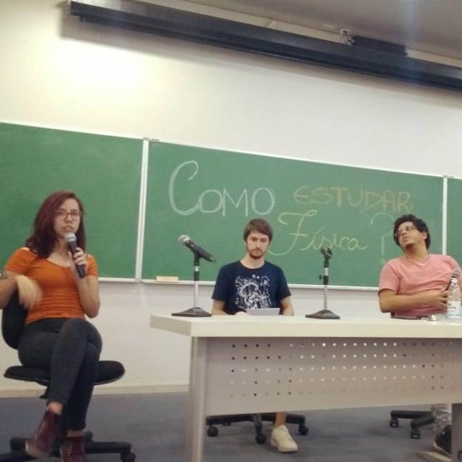
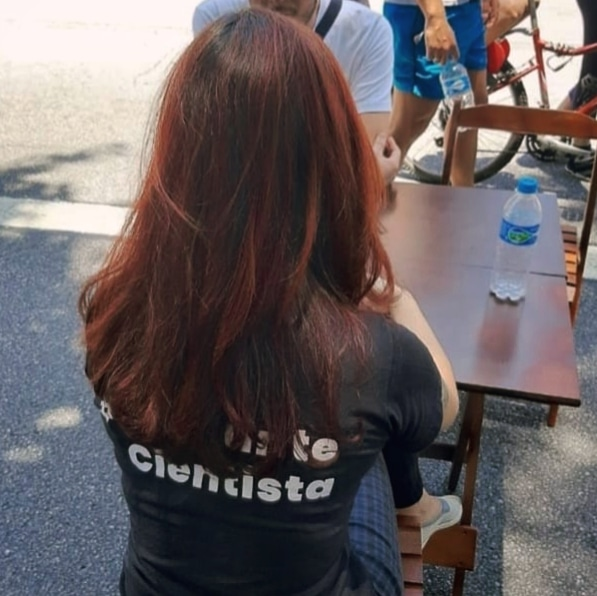

Welcome to my website!
My name is Bruna Shinohara de Mendonça and I am a theoretical Physics Ph.D. candidate under the supervision of professor Luis Gregório Dias at University of São Paulo. I am currently visiting Center for Quantum Devices (QDev - University of Copenhagen), under the supervision of Nancy Sandler.
My research is focused on the theoretical physics of topological materials and their ability of supporting robust quantum computation. Besides, I am part of a study group on Quantum Computation, where we have studied theoretical aspects, quantum algorithms on cloud quantum devices and we are currently working on optimizing a paper that used a quantum platform for modeling an Ising system.
My interest in quantum computation comes from noticing the fast pacing of the changes in paradigm of this area in both academia and industry. Quantum computers and quantum cryptography will, undoubtedly, have profound impacts on society. It appears that we are living in a very unique moment of history where we can make a difference by researching this area and thinking about the challenges that it will bring. I am excited to be a part of this!
My GitHub, in particular:
- A Python routine to solve systems of coupled equations with finite differences
- A collection of questions and answers about Modern Physics topics
- A LaTeX script to make your notes more Bullet Journal-esque (silly, but cute!) :)
Quantum computers are currently a topic of increasing interest due to its predicted optimized capabilities, as compared to their classical counterparts, to perform many important computational tasks. For instance, it could accurately perform complex numerical studies such as the simulation of large interacting systems, molecular dynamics and protein folding, an unprecedented development in chemistry and pharmaceutical research.
On the other hand, it also raises security concerns, as it may break RSA encryption, the most popular available security protocol. These are some of the reasons why many universities, along with major corporations, such as Microsoft, IBM, Google, and Amazon are investing in quantum computing research!
Among the main challenges for implementing a reliable quantum computer, the stability of the quantum bits (qubits) appears to be one of the most difficult ones, as they might lose quantum coherence due to noise from the environment.
An approach to overcome decoherence is to work with non-local qubits, as proposed in Topological Quantum Computation (TQC) protocols. The main idea is to use the inherent robustness of topological degenerated ground state spaces to encode quantum information in a locally-protected manner.
I am passionate about science outreach!

"How to study Physics?" round table held in the Institute of Physics - USP on February 2, 2020.
Most of my scientific outreach content is in Portuguese. Less than 5% of the Brazilian population speaks a second language, and it is hard to find content about quantum physics in Portuguese. Some of my efforts in this sense can be found on my Quora webpage.
I am also part of Via Saber, a science communication group. Our most famous project is “Pergunte a Um Cientista” (“Ask a Scientist”), events in public spaces in which scientists and the general public sit together to chat, learn and be inspired.
Via Saber also has a podcast, in which we bring scientists of different backgrounds to talk about their areas of interest in a casual setting. You can listen to it on Spotify and all major streaming platforms (in Portuguese).
 My hair is covering it, but it says "Pergunte a um Cientista" :)
You can also check out my Medium page - I will be posting about some themes that interest me. My pinned post, about how to program a quantum computer with QisKit, can be found in Portuguese as guest posts in Brazil Quantum and Via Saber Medium pages.
I’ve also collaborated with PhET, the pedagogical simulations project from University of Colorado - Boulder. You can check out Hooke’s law , the sim I’ve helped to construct, and many others on their website.
Finally, I have a series of posts on instagram about physics concepts that sound fake, but aren't and vice versa :)